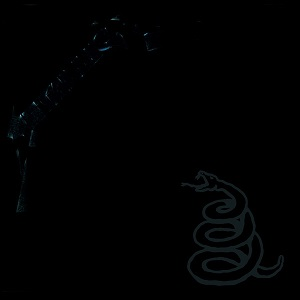
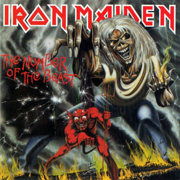
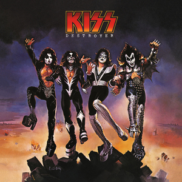
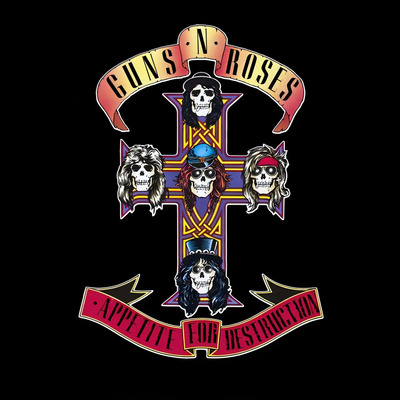
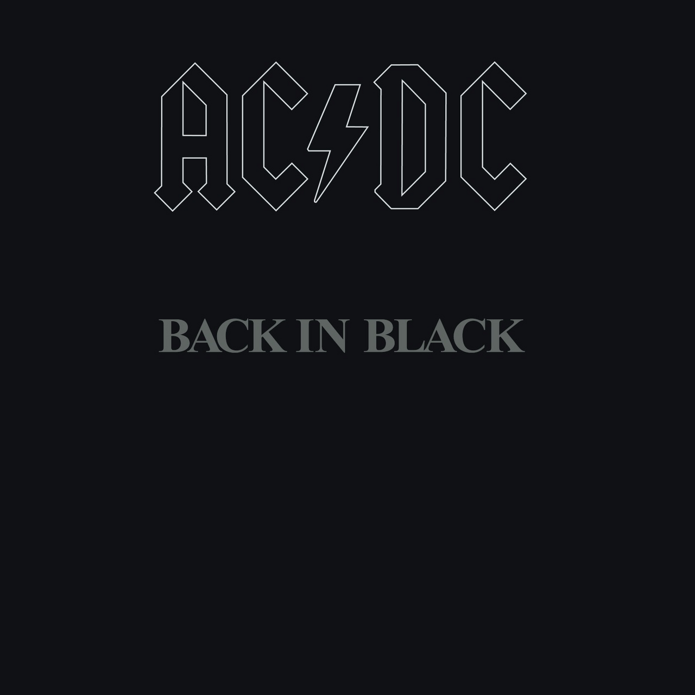

Sobre mí_
> ID: #0051_
> Name: Raquel_
> Age: 404 años (error no encontrado)_
> Clase: Desarrolladora_
> Location: La Plata, Buenos Aires, AR_
Hola. Soy Raquel, estudiante de la Tecnicatura Superior en Desarrollo de Software. Llegué al código desde otro lado, lo que me da una mirada diferente: sé que los sistemas no son neutrales, que el diseño tiene consecuencias, y que construir software es también tomar decisiones sobre el mundo.
Fuera de las pantallas académicas, paso tiempo en mundos distópicos —tanto en videojuegos como en películas de ciencia ficción. Hay algo en esos universos rotos y reconstruidos que me recuerda por qué me interesa hacer tecnología con intención.
Estoy aprendiendo a programar y, más importante, estoy aprendiendo a pensar como desarrolladora. Este portfolio es un log en tiempo real de ese proceso.
Habilidades_
Películas Favoritas_
Las tres películas que más me gustaron y marcaron una diferencia.

The Terminator
La película que definió el género de ciencia ficción oscura de los 80. James Cameron creó una visión aterradora del futuro donde las máquinas dominan. Explora el miedo a la tecnología descontrolada y el poder de la resistencia humana. Pura tensión y atmósfera cyberpunk.
Dir. James Cameron Ver Trailer
Ghost in the Shell
Un clásico del anime cyberpunk que explora la fusión entre humano y máquina. Mamoru Oshii crea una narrativa filosófica sobre consciencia y tecnología que sigue siendo relevante décadas después. Influenció toda una generación de ciencia ficción.
Dir. Mamoru Oshii Ver Trailer
The Matrix
Revolucionó el cine de ciencia ficción con su propuesta visual y filosófica. La pregunta sobre qué es real y qué es simulación nunca fue tan relevante como ahora. Un film que cambió la forma de hacer y pensar el cine de acción.
Dir. Lana y Lilly Wachowski Ver TrailerÁlbumes Favoritos_
Heavy metal y rock clásico: la banda sonora de mi vida.

Metallica
Metallica
1991
El álbum negro que definió una era. Enter Sandman, Nothing Else Matters, Sad But True.
Escuchar
The Number of the Beast
Iron Maiden
1982
El debut de Bruce Dickinson. Run to the Hills, Hallowed Be Thy Name. Metal épico.
Escuchar
Paranoid
Black Sabbath
1970
Los padres del heavy metal. War Pigs, Iron Man, Paranoid. Oscuro y pesado.
Escuchar
Destroyer
KISS
1976
Rock teatral en su máxima expresión. Detroit Rock City, God of Thunder, Shout It Out Loud.
Escuchar
Appetite for Destruction
Guns N' Roses
1987
Welcome to the Jungle. Sweet Child O' Mine. Paradise City. El debut más explosivo del hard rock.
Escuchar
Back in Black
AC/DC
1980
El tributo perfecto a Bon Scott. Hard rock puro y directo. Uno de los álbumes más vendidos de la historia.
Escuchar